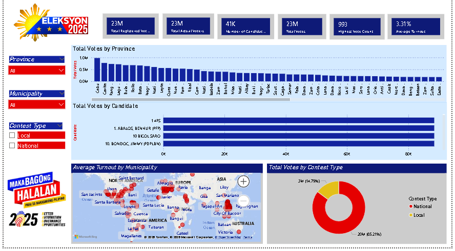

An interactive data analysis of the 2025 Philippine local and national election results using real COMELEC data, built with Power BI.
Six core measures computed using DAX formulas inside Power BI to summarize the entire election dataset.
Built in Power BI Report View with slicers for Province, Municipality, and Contest Type.

Observations drawn from the dashboard visuals and data exploration.
How the raw COMELEC data was cleaned, modeled, and prepared for analysis.
All tools used in building this project from raw data to final dashboard.